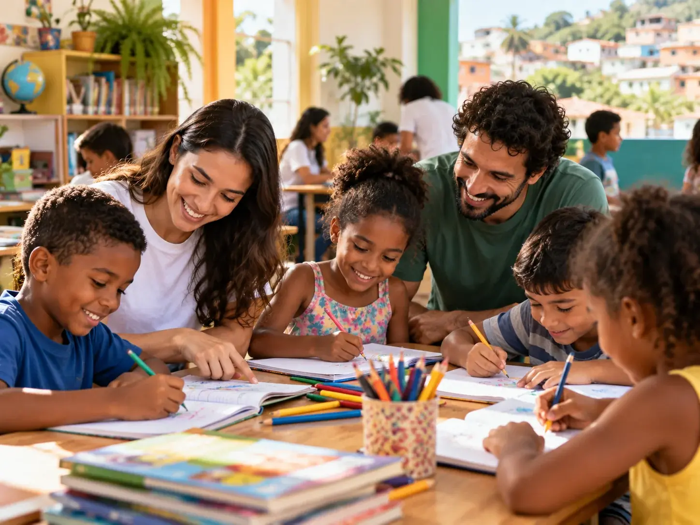
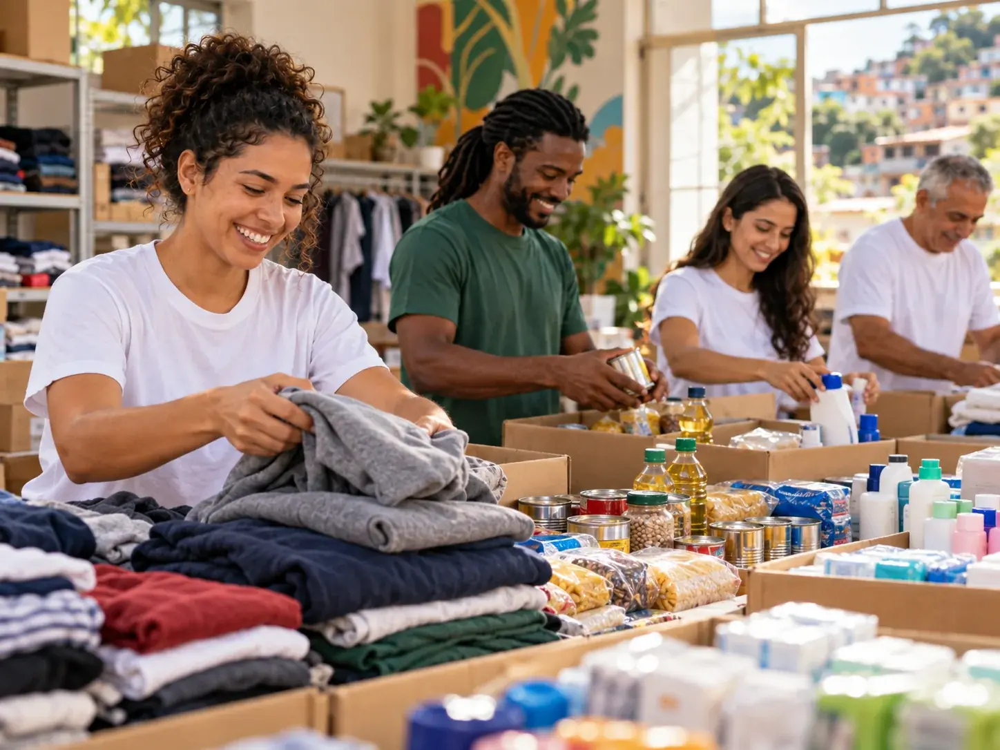

Projeto de Educação

O projeto oferece atividades educativas, apoio escolar e incentivo à leitura para crianças e adolescentes.

O projeto oferece atividades educativas, apoio escolar e incentivo à leitura para crianças e adolescentes.
A campanha arrecada alimentos, roupas e itens de higiene que são destinados às famílias atendidas pela organização.

Os voluntários podem participar da organização das doações, das atividades educativas e das ações realizadas nas comunidades.
Pessoas interessadas também podem colaborar por meio de contribuições financeiras ou da doação de alimentos, roupas e produtos de higiene.